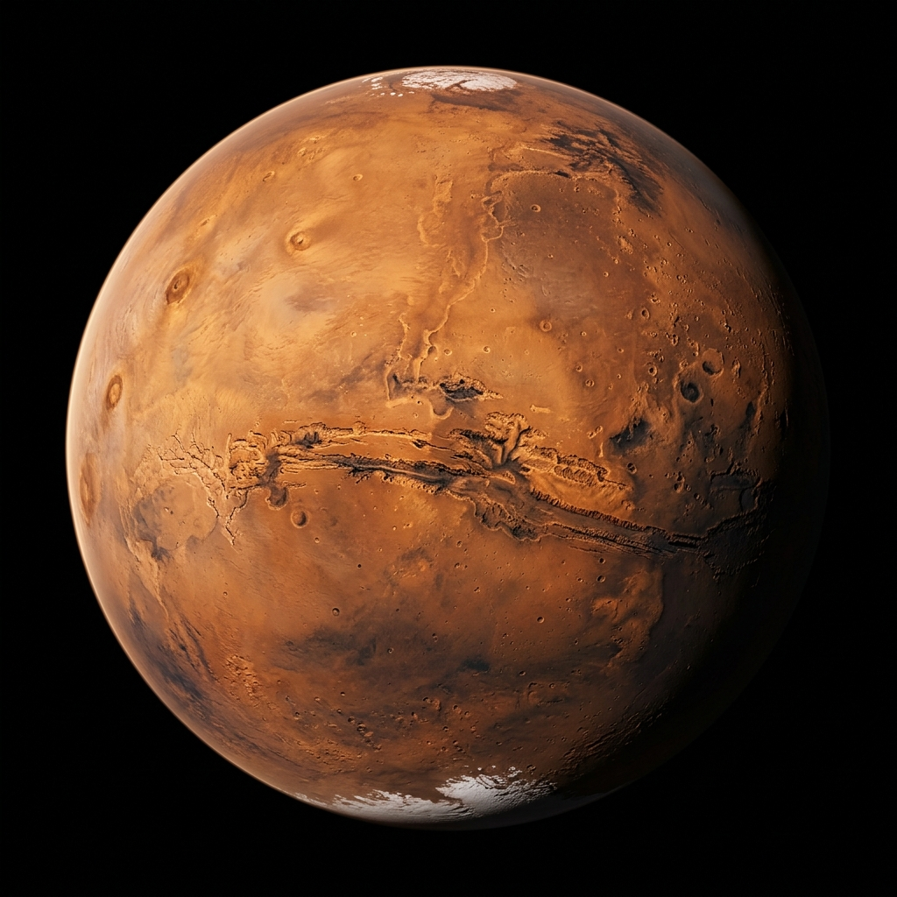

Liberté d'expression &
Vie privée sur Internet
Suite aux offensives répétées et inquiétantes de l'Union Européenne contre la confidentialité des correspondances privées et le chiffrement fort, SOL12 lutte activement pour préserver la liberté de parole et l'anonymat sur le web.
Nous finançons, durcissons et opérons sur le territoire suisse des middle relais Tor de haute qualité. Hébergés en dehors de l'espace juridique de l'UE, nos nœuds garantissent un routage neutre et une excellente stabilité.

Le Manifeste SOL12
Quatre engagements qui régissent notre infrastructure et notre action citoyenne.
Chiffrement Inconditionnel
Le chiffrement inviolable est un droit humain fondamental. Nous rejetons catégoriquement toute forme de porte dérobée, d'affaiblissement algorithmique ou de scan préventif des appareils.
Zéro Persistance Disque
Ce qui n'est pas enregistré ne peut être ni piraté, ni saisi, ni divulgué. Nos nœuds fonctionnent intégralement en mémoire vive volatile et ne conservent aucun journal d'activité.
Neutralité Souveraine
Implantés en Suisse, nos serveurs bénéficient d'un cadre juridique stable et protecteur, hermétique aux pressions extra-territoriales et aux directives de surveillance de masse de l'UE.
Don au Bien Commun
Nous opérons ces relais de manière bénévole et financée sur fonds propres pour densifier le réseau mondial Tor, au service des journalistes, militants et citoyens du monde entier.